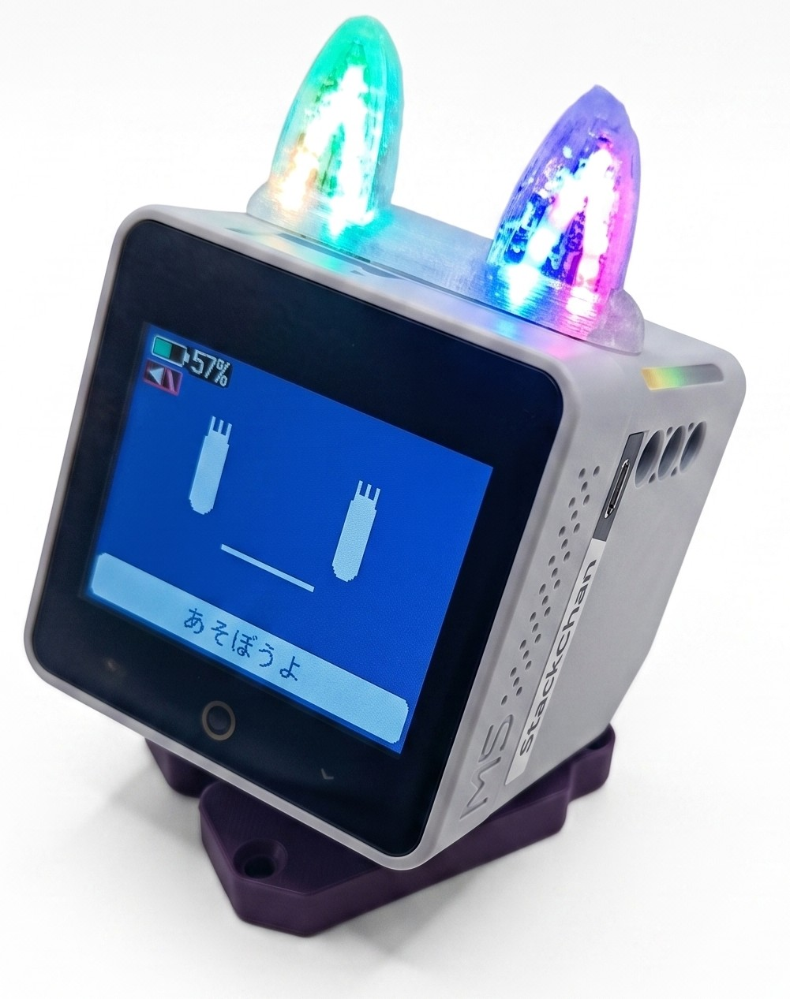
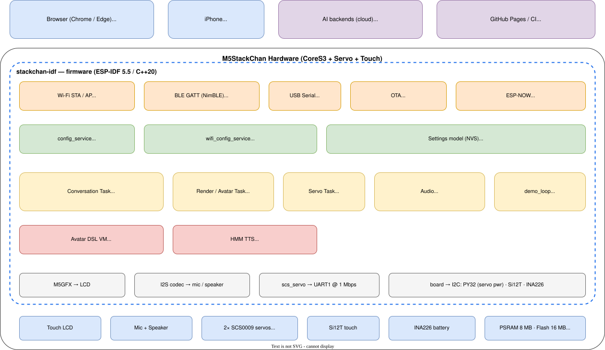
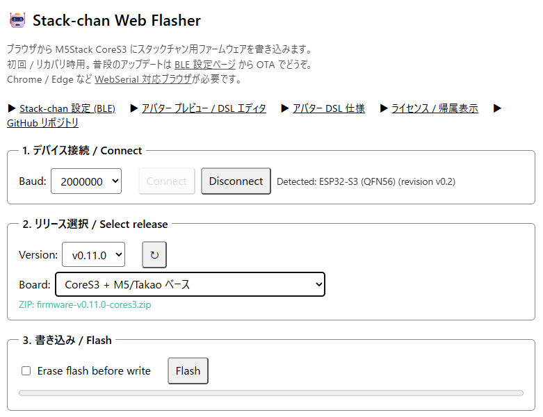
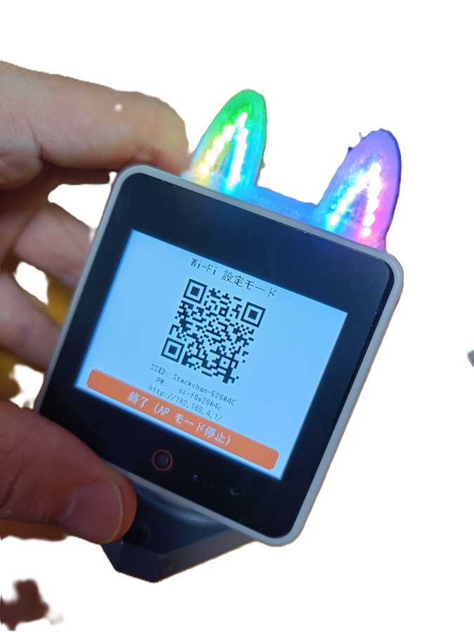
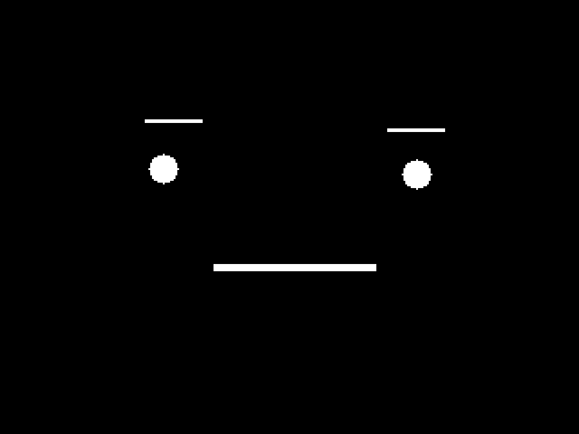
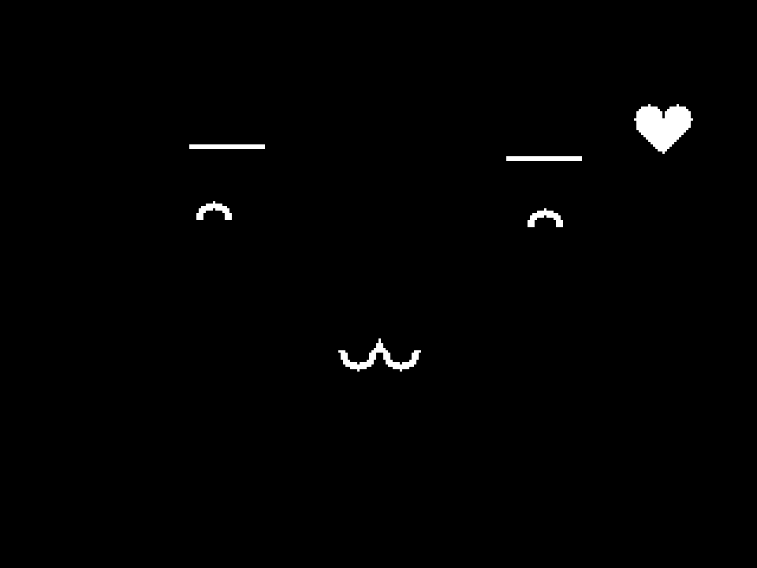
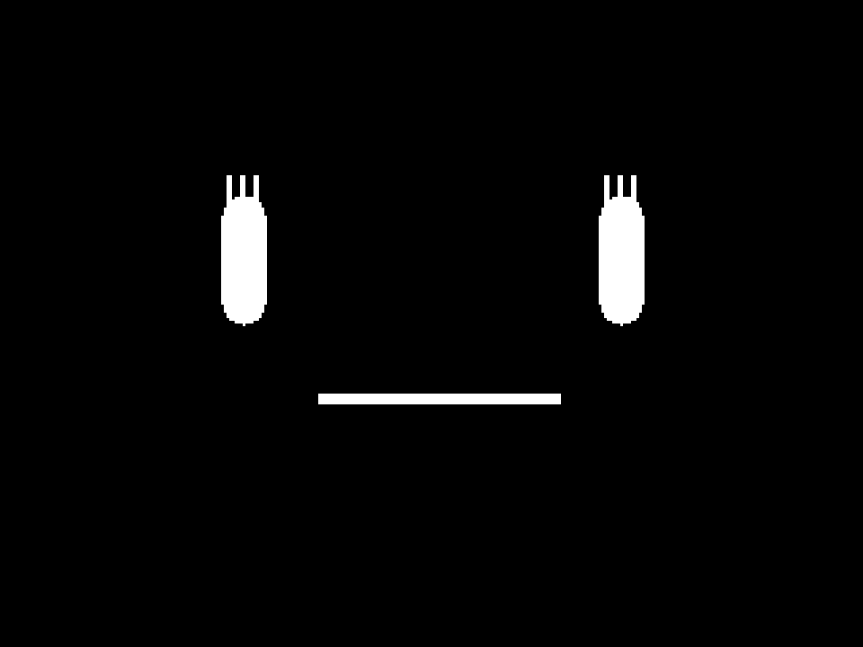
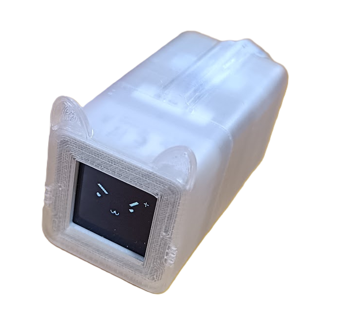
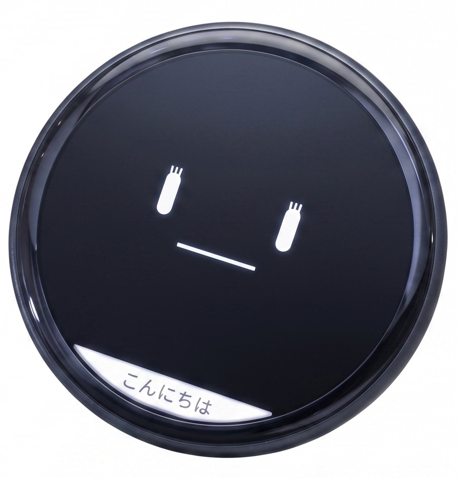

| ファームウェア | ベース | 作者 |
|---|---|---|
| Arduino 版 | Arduino | ししかわ さん |
| Moddable 版 | Moddable SDK / JavaScript | ししかわ さん |
| AIｽﾀｯｸﾁｬﾝ / AIｽﾀｯｸﾁｬﾝEx | Arduino | robo8080 さん / motoh さん |
| M5Stack 公式ファーム (製品版に搭載) | ESP-IDF 5.5 | M5Stack |
| stackchan-idf | ESP-IDF 5.5 / C++20 | 私 (Kenta Ida) |

vX.Y.Z タグでボード別にビルド・配置ciniml.github.io/stackchan-idf/
stackchan-XXXXXX.local
-- assets/omega_mouth.avdsl (抜粋) fn eye(center_x, center_y, r, is_left, bo) let cx = center_x + gaze_h * 3 if eye_open <= 0 then fill_rect(cx - r, cy - 2, r * 2, 4, primary) else fill_circle(cx, cy, r, primary)




